Time to learn about lasers!

The first assignment was to build a press-fit puzzle made out of cardboard and 12 (or more) pieces that assembled together would not fall apart with a small shake.
After re-learning how to use basic Illustrator tools, I created a relatively simple model based on discs with incisions that would function as joints (selected below):
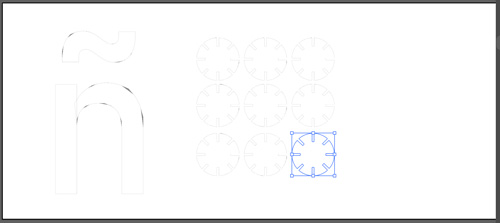
This resulted in this:
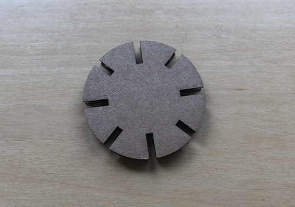
I kept the settings constant throughout the process. Given the careless design of this first discs, I realized that they did not account for the width of the cardboard itself, and therefore could not be assembled together. I used calipers to measure the cardboard width:
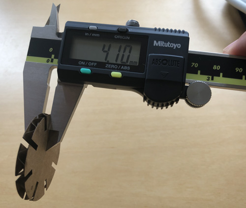
Then, with the right measures, updated the design of the discs:
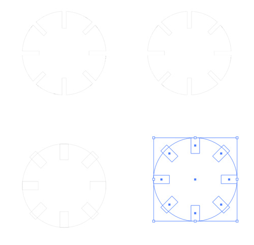
Note the original design above, and the newer with the wider spaces below. This resulted in a new, wider spaced disc:
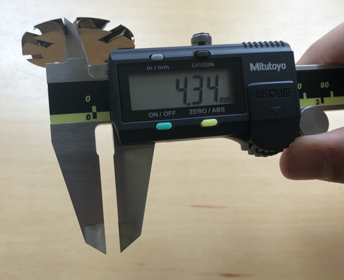
I tested the new pieces by assembling a couple.
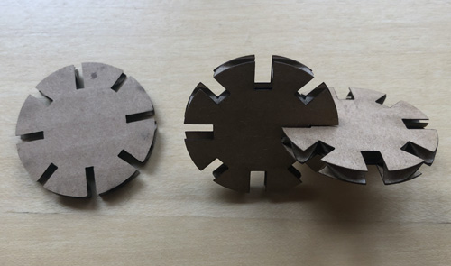
Much better -- still a bit wobbly, but hey -- they fit!
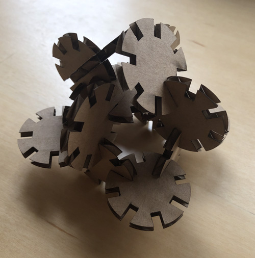
At this point I can either refine once more, or try to be reckless and come up with something a bit crazier. Inspired by geodesic domes, I designed some pieces that could be used to build one:
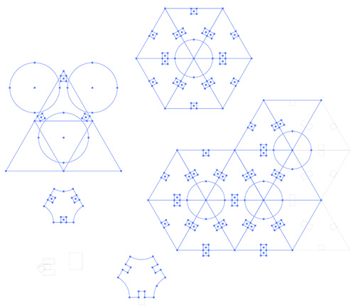
Then I created a pattern to easily cut the pieces:
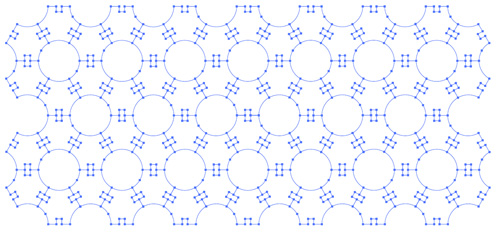
After an initial run, I realized the pieces were too small to comfortably handle, so I decided to make them a tad bigger (while maintaining the same width for the incisions to assemble them.
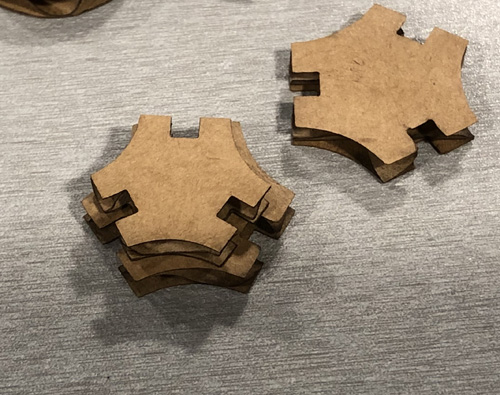
I then cut connecting pieces… twice because the initial batch was too small and the larger pieces clashed on each other.
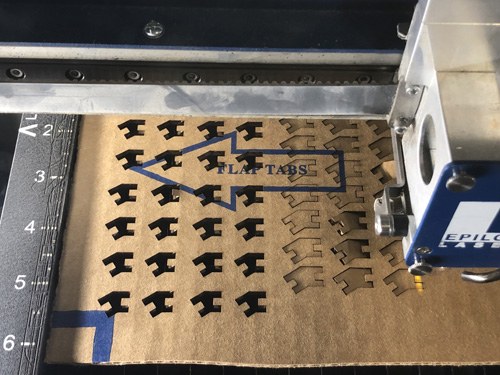
Unfortunately, over a third of the connectors fell through the laser cutter bed -- note to self: embiggen everything! The ones that made it, worked quite well:
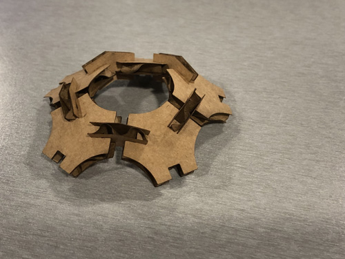
And eventually, I got to this:
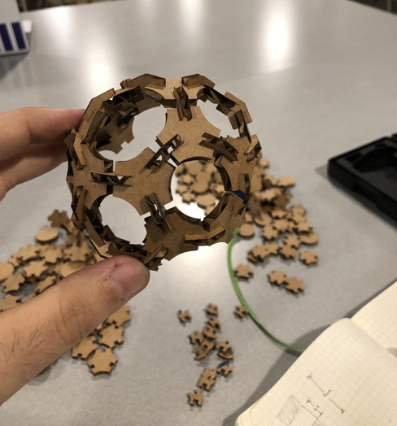
After I completed this shape, I realized that real 2V geodesic domes have two sizes of pieces, and not just one. In general, I'm satisfied with the outcome of my ingenuous approach, but now realize the value of doing previous research in order to optimize the time spent designing pieces.
Here is a link to the .AI file that contains the pattern and pieces.